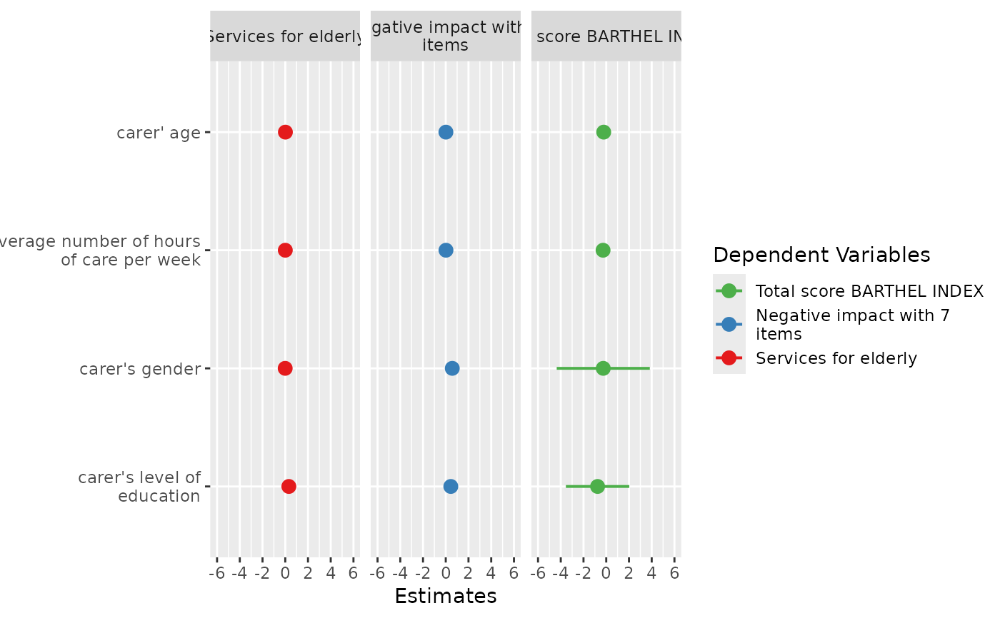

Plot and compare regression coefficients with confidence intervals of multiple regression models in one plot.
Usage
plot_models(
...,
transform = NULL,
std.est = NULL,
std.response = TRUE,
rm.terms = NULL,
title = NULL,
m.labels = NULL,
legend.title = "Dependent Variables",
legend.pval.title = "p-level",
axis.labels = NULL,
axis.title = NULL,
axis.lim = NULL,
wrap.title = 50,
wrap.labels = 25,
wrap.legend.title = 20,
grid.breaks = NULL,
dot.size = 3,
line.size = NULL,
value.size = NULL,
spacing = 0.4,
colors = "Set1",
show.values = FALSE,
show.legend = TRUE,
show.intercept = FALSE,
show.p = TRUE,
p.shape = FALSE,
p.threshold = c(0.05, 0.01, 0.001),
p.adjust = NULL,
ci.lvl = 0.95,
robust = FALSE,
vcov.fun = NULL,
vcov.type = c("HC3", "const", "HC", "HC0", "HC1", "HC2", "HC4", "HC4m", "HC5"),
vcov.args = NULL,
vline.color = NULL,
digits = 2,
grid = FALSE,
auto.label = TRUE,
prefix.labels = c("none", "varname", "label")
)Arguments
- ...
One or more regression models, including glm's or mixed models. May also be a
listwith fitted models. See 'Examples'.- transform
A character vector, naming a function that will be applied on estimates and confidence intervals. By default,
transformwill automatically use"exp"as transformation for applicable classes ofmodel(e.g. logistic or poisson regression). Estimates of linear models remain untransformed. UseNULLif you want the raw, non-transformed estimates.- std.est
Choose whether standardized coefficients should be used for plotting. Default is no standardization (
std.est = NULL). May be"std"for standardized beta values or"std2", where standardization is done by rescaling estimates by dividing them by two sd.- std.response
Logical, whether the response variable will also be standardized if standardized coefficients are requested. Setting both
std.response = TRUEandshow.std = TRUEwill behave as if the complete data was standardized before fitting the model.- rm.terms
Character vector with names that indicate which terms should be removed from the plot. Counterpart to
terms.rm.terms = "t_name"would remove the term t_name. Default isNULL, i.e. all terms are used. For factors, levels that should be removed from the plot need to be explicitely indicated in square brackets, and match the model's coefficient names, e.g.rm.terms = "t_name [2,3]"would remove the terms"t_name2"and"t_name3"(assuming that the variablet_namewas categorical and has at least the factor levels2and3). Another example for the iris dataset would berm.terms = "Species [versicolor,virginica]". Note that therm.terms-argument does not apply to Marginal Effects plots.- title
Character vector, used as plot title. By default,
response_labelsis called to retrieve the label of the dependent variable, which will be used as title. Usetitle = ""to remove title.- m.labels
Character vector, used to indicate the different models in the plot's legend. If not specified, the labels of the dependent variables for each model are used.
- legend.title
Character vector, used as legend title for plots that have a legend.
- legend.pval.title
Character vector, used as title of the plot legend that indicates the p-values. Default is
"p-level". Only applies ifp.shape = TRUE.- axis.labels
Character vector with labels for the model terms, used as axis labels. By default,
term_labelsis called to retrieve the labels of the coefficients, which will be used as axis labels. Useaxis.labels = ""orauto.label = FALSEto use the variable names as labels instead. Ifaxis.labelsis a named vector, axis labels (by default, the names of the model's coefficients) will be matched with the names ofaxis.label. This ensures that labels always match the related axis value, no matter in which way axis labels are sorted.- axis.title
Character vector of length one or two (depending on the plot function and type), used as title(s) for the x and y axis. If not specified, a default labelling is chosen. Note: Some plot types may not support this argument sufficiently. In such cases, use the returned ggplot-object and add axis titles manually with
labs. Useaxis.title = ""to remove axis titles.- axis.lim
Numeric vector of length 2, defining the range of the plot axis. Depending on plot-type, may effect either x- or y-axis. For Marginal Effects plots,
axis.limmay also be a list of two vectors of length 2, defining axis limits for both the x and y axis.- wrap.title
Numeric, determines how many chars of the plot title are displayed in one line and when a line break is inserted.
- wrap.labels
Numeric, determines how many chars of the value, variable or axis labels are displayed in one line and when a line break is inserted.
- wrap.legend.title
numeric, determines how many chars of the legend's title are displayed in one line and when a line break is inserted.
- grid.breaks
Numeric value or vector; if
grid.breaksis a single value, sets the distance between breaks for the axis at everygrid.breaks'th position, where a major grid line is plotted. Ifgrid.breaksis a vector, values will be used to define the axis positions of the major grid lines.- dot.size
Numeric, size of the dots that indicate the point estimates.
- line.size
Numeric, size of the lines that indicate the error bars.
- value.size
Numeric, indicates the size of value labels. Can be used for all plot types where the argument
show.valuesis applicable, e.g.value.size = 4.- spacing
Numeric, spacing between the dots and error bars of the plotted fitted models. Default is 0.3.
- colors
May be a character vector of color values in hex-format, valid color value names (see
demo("colors")) or a name of a pre-defined color palette. Following options are valid for thecolorsargument:If not specified, a default color brewer palette will be used, which is suitable for the plot style.
If
"gs", a greyscale will be used.If
"bw", and plot-type is a line-plot, the plot is black/white and uses different line types to distinguish groups (see this package-vignette).If
colorsis any valid color brewer palette name, the related palette will be used. UseRColorBrewer::display.brewer.all()to view all available palette names.There are some pre-defined color palettes in this package, see
sjPlot-themesfor details.Else specify own color values or names as vector (e.g.
colors = "#00ff00"orcolors = c("firebrick", "blue")).
- show.values
Logical, whether values should be plotted or not.
- show.legend
For Marginal Effects plots, shows or hides the legend.
- show.intercept
Logical, if
TRUE, the intercept of the fitted model is also plotted. Default isFALSE. Iftransform = "exp", please note that due to exponential transformation of estimates, the intercept in some cases is non-finite and the plot can not be created.- show.p
Logical, adds asterisks that indicate the significance level of estimates to the value labels.
- p.shape
Logical, if
TRUE, significant levels are distinguished by different point shapes and a related legend is plotted. Default isFALSE.- p.threshold
Numeric vector of length 3, indicating the treshold for annotating p-values with asterisks. Only applies if
p.style = "asterisk".- p.adjust
Character vector, if not
NULL, indicates the method to adjust p-values. Seep.adjustfor details.- ci.lvl
Numeric, the level of the confidence intervals (error bars). Use
ci.lvl = NAto remove error bars. Forstanreg-models,ci.lvldefines the (outer) probability for the credible interval that is plotted (seeci). By default,stanreg-models are printed with two intervals: the "inner" interval, which defaults to the 50%-CI; and the "outer" interval, which defaults to the 89%-CI.ci.lvlaffects only the outer interval in such cases. Seeprob.innerandprob.outerunder the...-argument for more details.- robust
Deprecated. Please use
vcov.fundirectly to specify the estimation of the variance-covariance matrix.- vcov.fun
Variance-covariance matrix used to compute uncertainty estimates (e.g., for robust standard errors). This argument accepts a covariance matrix, a function which returns a covariance matrix, or a string which identifies the function to be used to compute the covariance matrix. See
model_parameters().- vcov.type
Deprecated. The
type-argument is now included invcov.args.- vcov.args
List of arguments to be passed to the function identified by the
vcov.funargument. This function is typically supplied by the sandwich or clubSandwich packages. Please refer to their documentation (e.g.,?sandwich::vcovHAC) to see the list of available arguments.- vline.color
Color of the vertical "zero effect" line. Default color is inherited from the current theme.
- digits
Numeric, amount of digits after decimal point when rounding estimates or values.
- grid
Logical, if
TRUE, multiple plots are plotted as grid layout.- auto.label
Logical, if
TRUE(the default), and data is labelled,term_labelsis called to retrieve the labels of the coefficients, which will be used as predictor labels. If data is not labelled, format_parameters() is used to create pretty labels. Ifauto.label = FALSE, original variable names and value labels (factor levels) are used.- prefix.labels
Indicates whether the value labels of categorical variables should be prefixed, e.g. with the variable name or variable label. See argument
prefixinterm_labelsfor details.
Examples
data(efc)
# fit three models
fit1 <- lm(barthtot ~ c160age + c12hour + c161sex + c172code, data = efc)
fit2 <- lm(neg_c_7 ~ c160age + c12hour + c161sex + c172code, data = efc)
fit3 <- lm(tot_sc_e ~ c160age + c12hour + c161sex + c172code, data = efc)
# plot multiple models
plot_models(fit1, fit2, fit3, grid = TRUE)

# plot multiple models with legend labels and
# point shapes instead of value labels
plot_models(
fit1, fit2, fit3,
axis.labels = c(
"Carer's Age", "Hours of Care", "Carer's Sex", "Educational Status"
),
m.labels = c("Barthel Index", "Negative Impact", "Services used"),
show.values = FALSE, show.p = FALSE, p.shape = TRUE
)
 if (FALSE) {
# plot multiple models from nested lists argument
all.models <- list()
all.models[[1]] <- fit1
all.models[[2]] <- fit2
all.models[[3]] <- fit3
plot_models(all.models)
# plot multiple models with different predictors (stepwise inclusion),
# standardized estimates
fit1 <- lm(mpg ~ wt + cyl + disp + gear, data = mtcars)
fit2 <- update(fit1, . ~ . + hp)
fit3 <- update(fit2, . ~ . + am)
plot_models(fit1, fit2, fit3, std.est = "std2")
}
if (FALSE) {
# plot multiple models from nested lists argument
all.models <- list()
all.models[[1]] <- fit1
all.models[[2]] <- fit2
all.models[[3]] <- fit3
plot_models(all.models)
# plot multiple models with different predictors (stepwise inclusion),
# standardized estimates
fit1 <- lm(mpg ~ wt + cyl + disp + gear, data = mtcars)
fit2 <- update(fit1, . ~ . + hp)
fit3 <- update(fit2, . ~ . + am)
plot_models(fit1, fit2, fit3, std.est = "std2")
}